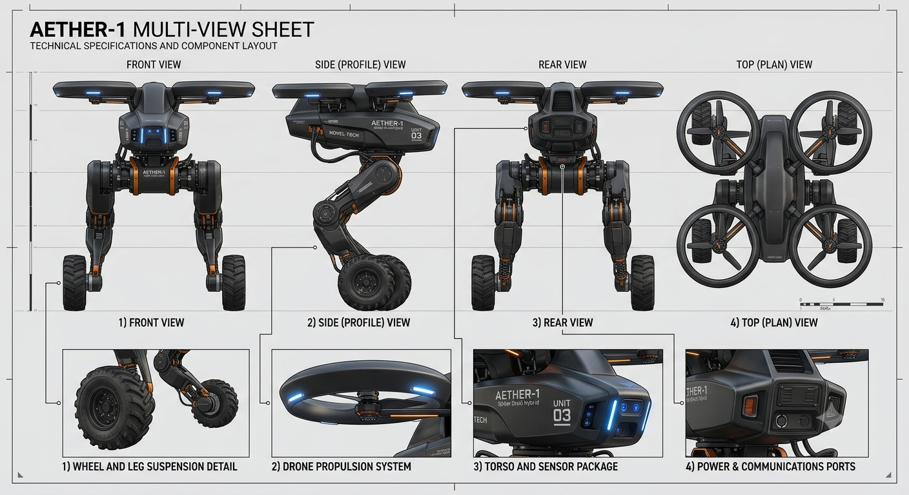
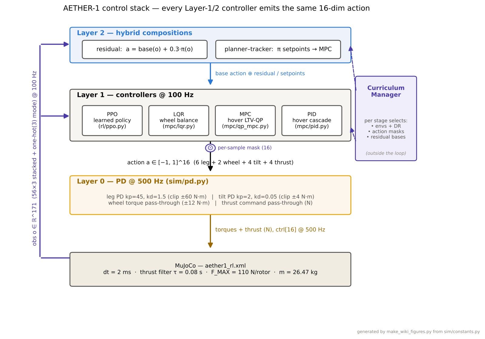
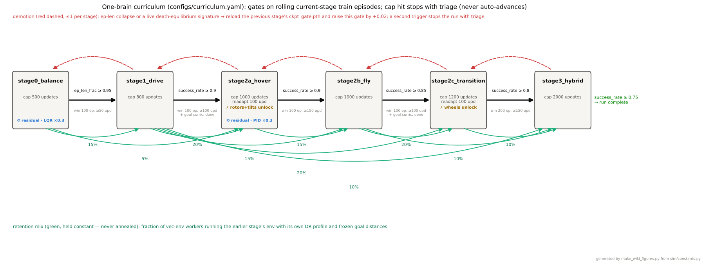
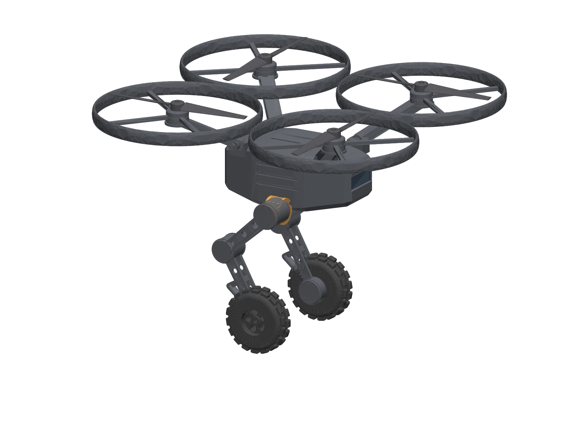

AETHER-1
A hybrid legged-wheeled-aerial robot controlled by one reinforcement-learning policy that balances, drives, flies, lands, and — most importantly — decides for itself when to drive and when to fly, because flying costs roughly ten times more energy than driving.
Why a hybrid?
Inspection robots today split into two families with hard limits: confined-space drones fly superbly but only for minutes, and ground robots run for hours but stop at the first stairwell, drop, or debris field. The physics is unforgiving — hovering burns kilowatts while driving burns watts. AETHER-1's answer is one asset that drives for hours and spends its precious flight seconds only where wheels cannot go, with that trade-off learned through an energy-priced reward rather than hard-coded.
The machine

- Statically unstable two-wheel base — standing still is already a control problem (the center of mass sits ahead of the axle, so it balances like a Segway, by design).
- Four tilting rotors for vertical takeoff, 3D flight, and translation without pitching the body.
- Articulated legs that set stance geometry on the ground and tuck in flight.
The control stack

The reinforcement-learning side is a from-scratch PPO — networks, advantage estimation, masking, and normalization hand-written in PyTorch and unit-tested, no RL libraries. Beside it sits a classical stack (LQR wheel balance, an MPC hover controller, cascade PID), used as benchmarks, safety layers, and bases the policy learns corrections on. Everything runs behind one controller interface, so learned and classical controllers are interchangeable and honestly comparable on identical seeded evaluations.
One brain, six stages

A single policy advances through six stages on measured performance, with a fraction of training always replaying earlier stages so new skills never overwrite old ones. The run is protected by verification gates — physics sanity checks, 250 unit tests, and a reward-economics auditor that blocks training if any stage's reward structure makes failure more profitable than success. The final arbitration stage closed at a 0.995 success gate under domain randomization across 36 axes.
From simulation to hardware

The 26.47 kg simulation robot is the validated dynamics reference; the hardware track is a 15 kg Mk1 demonstrator with a full engineering package behind it: component selection and sourcing, power and endurance modeling, EU regulatory strategy, a parametric CAD model with a validated URDF, staged test rigs that replace guessed simulation constants with measured ones, and a safety-gated bring-up procedure. The guiding number is honest: at this scale a battery aircraft hovers for minutes — but a hybrid that drives at a tenth of a kilowatt completes 90–120 minute missions with 10–15 minutes of flight exactly where it's needed.
Status
- Done — simulation-validated full stack (curriculum complete at 0.995), deployment package with hard sim verification, Mk1 engineering package (BOM, build plan, CAD + URDF).
- Now — Mk1 hardware prototype program: test rigs, procurement, build.
- Next — tethered flight tests, the drive→fly→land→drive demo, and first pilot conversations in industrial inspection.